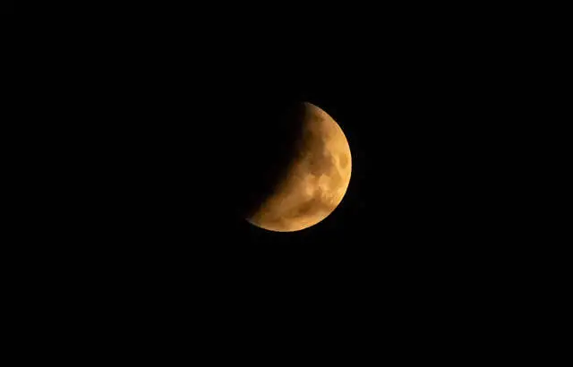

Conquête spatiale : La France intègre le programme de la Nasa sur l’exploration de la Lune

Les Français veulent eux aussi viser la Lune. La France a en effet rejoint mardi le programme de future exploration de notre satellite impulsé par les Etats-Unis, en signant les « accords Artemis » qui envisagent notamment de créer des « zones de sécurité » pour protéger les ressources extraterrestres.
La France devient ainsi le 20e pays (après notamment le Canada, le Japon, le Royaume-Uni, l’Ukraine, Israël, les Émirats arabes unis, le Brésil…) à s’associer à cette nouvelle vague d’exploration spatiale pacifique, précise le Centre national d’études spatiales (CNES), l’agence spatiale française. Son PDG Philippe Baptiste a signé à Washington, en présence de l’administrateur de la Nasa Bill Nelson, le texte de la déclaration dite « accords Artemis ». Le programme américain du même nom vise à renvoyer des astronautes sur la Lune autour de 2025, plus de 50 ans après l’alunissage historique de la mission Apollo 11. Pour y établir à terme une présence humaine durable.
Le texte prévoit également la construction d’une station qui sera assemblée en orbite lunaire à partir de 2024, le Lunar Gateway, futur tremplin pour des vols habités plus lointains. Les accords Artemis constituent un ensemble d’ententes bilatérales avec les Etats-Unis, qui s’appuient sur le traité international régissant l’espace extra-atmosphérique de 1967. Les pays signataires adhèrent à une dizaine de principes s’appliquant à leurs futures activités sur la Lune, mais aussi sur Mars ou des astéroïdes : transparence des missions, interopérabilité des systèmes, assistance au personnel en cas de détresse, partage des données scientifiques, préservation des sites historiques… Une mesure plus controversée prévoit la possibilité de délimiter des « zones de sécurité » pour éviter des « interférences nuisibles » par un tiers, afin notamment de protéger l’exploitation de ressources, comme l’eau lunaire. Et ce alors que le traité de 1967 interdit toute « appropriation nationale » de ces ressources.
08/06/22 à 05h17